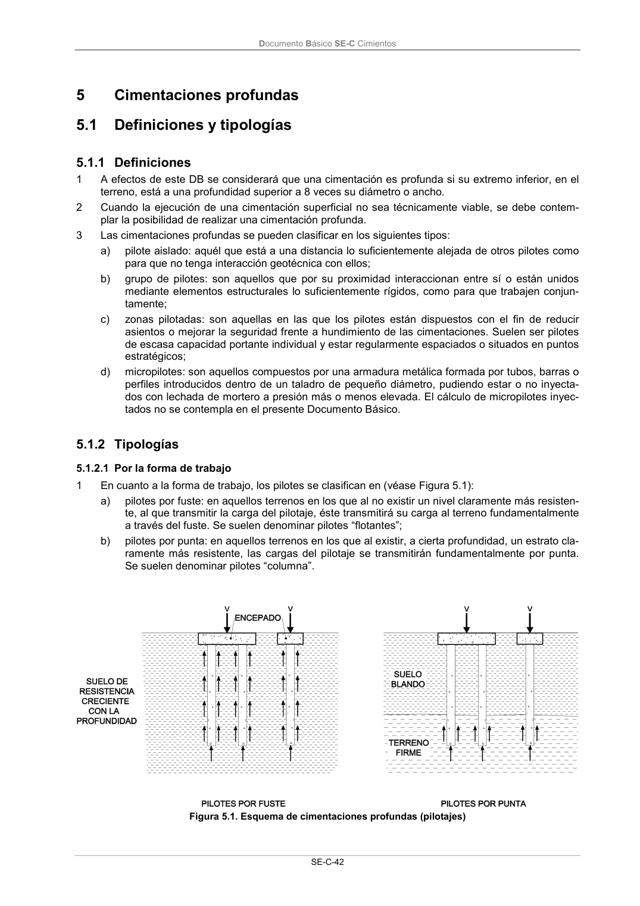

DB-SE-C · Fragmento de PDF p47 · versión 2019-12-20 · capa oficial
Formatos: JSON compacto · Markdown · PDF fuente
Ámbito del documento · texto del ámbito · documento y tablas
ID técnico a0103 · PDF pág. 47 · jerarquía no validada por persona · no es capítulo: sin_linea_de_encabezado · padre: raíz · literal original en el contenido: «Definiciones y tipologías 5.1.1 Definiciones»
Definiciones y tipologías 5.1.1 Definiciones 5.1.1 Definiciones 1 A efectos de este DB se considerará que una cimentación es profunda si su extremo inferior, en el terreno, está a una profundidad superior a 8 veces su diámetro o ancho. 2 Cuando la ejecución de una cimentación superficial no sea técnicamente viable, se debe contem- plar la posibilidad de realizar una cimentación profunda. 3 Las cimentaciones profundas se pueden clasificar en los siguientes tipos: a) pilote aislado: aquél que está a una distancia lo suficientemente alejada de otros pilotes como para que no tenga interacción geotécnica con ellos; b) grupo de pilotes: son aquellos que por su proximidad interaccionan entre sí o están unidos mediante elementos estructurales lo suficientemente rígidos, como para que trabajen conjun- tamente; c) zonas pilotadas: son aquellas en las que los pilotes están dispuestos con el fin de reducir asientos o mejorar la seguridad frente a hundimiento de las cimentaciones. Suelen ser pilotes de escasa capacidad portante individual y estar regularmente espaciados o situados en puntos estratégicos; d) micropilotes: son aquellos compuestos por una armadura metálica formada por tubos, barras o perfiles introducidos dentro de un taladro de pequeño diámetro, pudiendo estar o no inyecta- dos con lechada de mortero a presión más o menos elevada. El cálculo de micropilotes inyec- tados no se contempla en el presente Documento Básico.

PDF fuente redistribuible: copia fiel enlazada en esta página (SHA256 verificado).